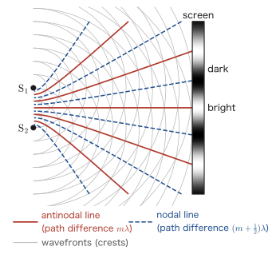
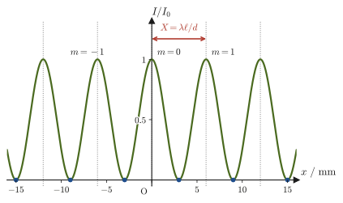
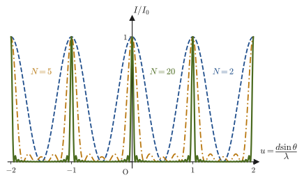

Chapter 16Interference of Light and the Diffraction Grating — Young's Experiment, Thin Films, and Newton's Rings
A soap bubble film, lit by sunlight, looks colored like a rainbow. An oil film spread over a wet road surface also shines with iridescent colors that change with the angle from which we view it. When we hold the back side of a CD or DVD up to the light, rainbow-colored light appears, depending on the angle. If we look closely at a camera lens, its surface sometimes looks faintly tinted purple or green—this is because a special film has been applied to the lens to suppress its reflection. All of these are manifestations of one and the same physical phenomenon—the interference of light.
In Chapter 14 and Chapter 15, we studied reflection, refraction, and image formation by lenses from the standpoint of geometrical optics, which treats light as “light rays that travel in straight lines.” However, these colored patterns cannot be explained by treating light merely as a collection of rays. We need to recall that light is a wave and that when two or more waves overlap they reinforce or cancel each other—the principle of superposition and interference of waves that we learned in Chapter 11. In this chapter, taking as our starting point the interference of light that Thomas Young proposed in 1801 and demonstrated experimentally in 1803, we examine, one by one, interference phenomena that show that light is indeed a wave, in three concrete optical systems: thin films, the air wedge, and Newton's rings. Thin films, the air wedge, and Newton's rings can all be understood in a unified way by combining two tools: the geometry of the path difference between the two reflected rays, and the rule learned in Chapter 14 that “the phase changes by $\pi$ on reflection at a fixed end.”
At the end of this chapter, we also touch on how this idea of interference is used in modern materials science. The phenomenon in which X-rays directed at a crystal are strongly reflected only at particular angles (Bragg reflection) is a consequence of exactly the same principle as in Newton's rings and the air wedge—reinforcement occurs when the path difference is an integer multiple of the wavelength—and it has become the most fundamental experimental technique for determining crystal structures (X-ray diffraction).
- The definition of the optical path length (optical distance) $n\ell$, and a unified way to treat the path difference of light passing through different media
- Derivation of the interference condition for two waves in Young's double-slit experiment, and the formula $x=\lambda\ell/d$ for the spacing of the interference fringes
- Multiple-slit interference by a diffraction grating, and why the bright fringes become sharper as the number of slits $N$ increases
- How to derive the interference conditions for thin films, the air wedge, and Newton's rings, paying attention to the $\pi$ phase change on reflection at a fixed end
- Applications of thin-film interference, such as antireflection coatings and interference filters, and the application of an interference phenomenon, X-ray diffraction by crystals (the Bragg condition), to materials science
Source notes: Yasuhide Mochizuki, Physics Notes: Waves, pp. 34–37.
16.1 Optical Path Length (Optical Distance)
Whether two waves interfere to reinforce or cancel each other is determined, as we learned in Chapter 11, by the difference in the lengths of the paths (the path difference) that the two waves have traveled. However, when light travels not only through vacuum but also through media such as glass or water, it is not necessarily true that “equal distances give equal phase shifts.” This is because the speed of light in a medium is lower than in vacuum (in a medium of absolute refractive index $n$ (also called the refractive index), the speed of light is $v=c/n$; see Chapter 13. In Chapter 13 we wrote the speed of light in vacuum as $c_0$, but in this chapter we write it as $c$; they are the same quantity), so the time needed to travel the same distance changes. Therefore, in order to compare in a unified way the path differences of light that travels across different media, we introduce the following quantity.
Definition 16.1: Optical path length (optical distance)
For light traveling a distance $\ell\ [\mathrm{m}]$ in a medium of absolute refractive index $n$, the quantity
$$ n\ell $$is called the optical path length or optical distance. The optical path length is a length that expresses “how far light would travel in vacuum in the same time that it takes to travel that distance,” and it is a quantity for comparing fairly the paths of light traveling through different media by converting them into distances in vacuum.
That the optical path length indeed has this meaning was already confirmed when we introduced this quantity in stating Fermat's principle in Section 14.5.1 (the $c_0$ in the time formula $t=\ell/v=n\ell/c_0$ used there is $c$ in the notation of this chapter). To recall just the main point: the time needed to travel a distance $\ell$ in a medium (speed of light $v=c/n$) is $t_1=\ell/v=n\ell/c$, which is exactly the same as the time $t_2=n\ell/c$ needed to travel in vacuum (speed of light $c$) a distance equal to the optical path length $n\ell$. That is, “the time to travel a distance $\ell$ in a medium” and “the time to travel a distance $n\ell$ in vacuum” are equal. This is why we call $n\ell$ “the length converted into a distance in vacuum.” In this section, we see how to use this quantity for the path difference in interference (Figure 16.1).
Example 16.1: Optical path length of light passing through water
For light traveling a distance $\ell=3.00\ \mathrm{m}$ in water (absolute refractive index $n=1.33$), find the optical path length $n\ell$. Also, compare it with the distance that light travels in vacuum in the same time, and find the time the light takes to travel through the water.
Solution. By Definition 16.1, the optical path length is
$$ n\ell=1.33\times3.00\ \mathrm{m}=3.99\ \mathrm{m} $$This means that “in the same time it takes to travel $3.00\ \mathrm{m}$ in water, light would travel $3.99\ \mathrm{m}$ in vacuum.” The time taken to travel through the water, using the speed of light in vacuum $c=3.00\times10^{8}\ \mathrm{m/s}$ (a value rounded to three significant figures), is
$$ t=\frac{n\ell}{c}=\frac{3.99\ \mathrm{m}}{3.00\times10^{8}\ \mathrm{m/s}}\approx1.33\times10^{-8}\ \mathrm{s} $$The speed of light in water is $v=c/n\approx2.26\times10^{8}\ \mathrm{m/s}$, and we can confirm that the direct calculation $t=\ell/v=3.00/(2.26\times10^{8})\approx1.33\times10^{-8}\ \mathrm{s}$ gives the same answer (the dimensions check out: $\mathrm{m}\div(\mathrm{m/s})=\mathrm{s}$).
This idea of the optical path length is used in the same way in all of Young's double-slit experiment, thin films, the air wedge, and Newton's rings, which are treated in Section 16.2 and later. Note that when we compare the path difference of two rays of light that travel across media of different refractive indices, we must always compare not the “actual distance $\ell$” but the “optical path length $n\ell$.”
16.2 Young's Double-Slit Experiment
The British physicist Thomas Young (1773–1829) proposed the principle of the interference of light in 1801. In 1803 he divided the light from a single light source into two narrow beams, made them overlap, and observed the pattern of bright and dark fringes that appeared on a screen beyond, thereby demonstrating the interference of light. The version of this experiment arranged so that the light passes through two narrow slits (gaps) is known as Young's double-slit experiment; it is the historic experiment that first clearly showed that light is a wave and that measured the wavelength of light. At that time, owing in part to the authority of Newton, the theory that light consists of particles (the particle theory) was dominant, but Young's double-slit experiment showed that where the light from two sources overlaps, it becomes bright in some places and dark in others—something that can be explained only by the superposition of waves—and this gave strong support to the wave theory of light.
Caution: Interference requires diffraction
Light can interfere only when it undergoes diffraction (the phenomenon in which a wave bends around to the back of an obstacle or spreads out beyond a gap; Section 11.9). If light traveled only in straight lines, as in geometrical optics, the light passing through the two slits would simply illuminate separate places on the screen, no region where the two overlap would form, and no interference fringes would appear. So we let the light pass through slits and diffract. If the slit width is sufficiently small compared with the wavelength, the light spreads out like a fan (the angle of spread is roughly “wavelength $\div$ slit width”; for example, for a slit width of $50\ \mathrm{\mu m}$ and a wavelength of $600\ \mathrm{nm}$, it is about $0.012\ \mathrm{rad}$, which gives a spread of about $12\ \mathrm{mm}$ at a distance of $1\ \mathrm{m}$). In this way, the light from the two slits can overlap on the screen and interfere.
As shown in Figure 16.2, the apparatus consists of a monochromatic light source, a single narrow slit $\mathrm{S}_0$, a plate with two narrow slits $\mathrm{S}_1,\mathrm{S}_2$ cut in it, and a screen. The light from the source is first diffracted at $\mathrm{S}_0$ and spreads out, illuminating both $\mathrm{S}_1,\mathrm{S}_2$ at the same time. In this way $\mathrm{S}_1,\mathrm{S}_2$ become two sources that are in phase (sources whose phase difference is constant in time, so that a stable interference pattern forms, are called coherent sources). Let the spacing between the two slits be $d$, and let the distance from the slit plate to the screen be $\ell$. For example, if we use light of wavelength $600\ \mathrm{nm}$ in an apparatus with $d\fallingdotseq2.0\ \mathrm{mm}$ and $\ell\fallingdotseq1.0\ \mathrm{m}$, Eq. \eqref{eq:16-young-spacing}, which we derive later, gives a fringe spacing of only $0.30\ \mathrm{mm}$, which is very fine, so the fringes must be observed under magnification. If the slit spacing is made smaller still (to about $0.2\ \mathrm{mm}$), the fringes spread out and become easy to see with the naked eye (Example 16.2).
Figure 16.3 shows, from above, how the waves spreading from $\mathrm{S}_1,\mathrm{S}_2$ look. The gray arcs represent the wavefronts of the wave crests emitted from $\mathrm{S}_1,\mathrm{S}_2$ (since the sources are in phase, the crests spread out simultaneously as circles of the same radius). At points where a crest of one wave meets a crest of the other, the waves reinforce each other, and at points where a crest meets a trough, they cancel each other. The line joining the points where crest meets crest (trough meets trough) is called an antinodal line (red solid line), and the line joining the points where crest meets trough is called a nodal line (blue dashed line). Points where the difference in distance to the two sources (the path difference) is an integer multiple of the wavelength lie on antinodal lines, and points where it is a half-integer multiple lie on nodal lines; these lines take the shape of hyperbolas with foci at $\mathrm{S}_1,\mathrm{S}_2$. On the screen, the places where antinodal lines hit are bright fringes, and the places where nodal lines hit are dark fringes.

Let us examine whether a point $\mathrm{P}$ on the screen is bright or dark. Let $\mathrm{S}_1\mathrm{P}=\ell_1$ and $\mathrm{S}_2\mathrm{P}=\ell_2$; let $\mathrm{O}$ be the center of the screen (the foot of the perpendicular dropped from the midpoint $\mathrm{S}$ of $\mathrm{S}_1,\mathrm{S}_2$), let $x$ be the distance from $\mathrm{O}$ to $\mathrm{P}$, and let $\theta$ be the angle at which $\mathrm{P}$ is seen from $\mathrm{S}$ (the angle between $\mathrm{SO}$ and $\mathrm{SP}$) (Figure 16.4). In an actual experiment, $d\ll\ell$ and $x\ll\ell$ (both the slit spacing and the range viewed on the screen are far smaller than the distance between the slits and the screen), so $\mathrm{S}_1\mathrm{P},\mathrm{S}_2\mathrm{P}$ can be regarded as nearly parallel to $\mathrm{SP}$.
Derivation: The formula for the fringe spacing
We find the path difference $|\ell_2-\ell_1|$ at the point $\mathrm{P}$. Drop a perpendicular from $\mathrm{S}_1$ to the line $\mathrm{S}_2\mathrm{P}$, and let its foot be $\mathrm{H}$ (the enlarged view in Figure 16.4). Since $\mathrm{P}$ is very far from the slits, $\mathrm{S}_1\mathrm{H}$ is also nearly perpendicular to $\mathrm{S}_1\mathrm{P}$; that is, $\mathrm{H}$ and $\mathrm{S}_1$ are at nearly the same distance from $\mathrm{P}$. Therefore, the extra distance traveled by the light from $\mathrm{S}_2$ is the length of $\mathrm{S}_2\mathrm{H}$: $|\ell_2-\ell_1|\fallingdotseq\mathrm{S}_2\mathrm{H}$.
In the right triangle $\mathrm{S}_1\mathrm{S}_2\mathrm{H}$ (the right angle is at $\mathrm{H}$, and the hypotenuse is $\mathrm{S}_1\mathrm{S}_2=d$), let us confirm why the angle at $\mathrm{S}_1$ equals $\theta$. The side $\mathrm{S}_1\mathrm{S}_2$ is parallel to the screen and therefore perpendicular to $\mathrm{SO}$, and $\mathrm{S}_1\mathrm{H}$ is perpendicular to $\mathrm{S}_2\mathrm{P}$ ($\fallingdotseq\mathrm{SP}$). When “the angle between $\mathrm{SO}$ and $\mathrm{SP}$ is $\theta$,” the angle between the two lines perpendicular to them is also $\theta$ (because the relation is that of two perpendicular lines rotated through the same angle). Hence $\angle\mathrm{S}_2\mathrm{S}_1\mathrm{H}=\theta$, and the length of the side $\mathrm{S}_2\mathrm{H}$ opposite $\theta$ is (since opposite side $=$ hypotenuse $\times\sin\theta$) $d\sin\theta$. Therefore, we obtain
$$ |\ell_2-\ell_1|\fallingdotseq d\sin\theta $$Next, we use the fact that $\theta$ is small (because $x\ll\ell$, the range viewed on the screen is narrow, and $\theta\fallingdotseq0$); the approximation $\sin\theta\fallingdotseq\tan\theta$ then holds (when $\theta$ is measured in radians, the three values $\sin\theta,\ \tan\theta,\ \theta$ approach one another as $\theta$ approaches 0; this is an approximation you learned with radian measure in high school mathematics). On the other hand, from the right triangle $\mathrm{SOP}$ we have $\tan\theta=x/\ell$, so
$$ \sin\theta\fallingdotseq\tan\theta=\frac{x}{\ell} $$Substituting this into $d\sin\theta$ gives
$$ d\sin\theta\fallingdotseq d\cdot\frac{x}{\ell}=\frac{dx}{\ell} $$Therefore, the path difference at the point $\mathrm{P}$ is
\begin{equation} |\ell_2-\ell_1|\fallingdotseq\frac{dx}{\ell} \label{eq:16-young-pathdiff} \end{equation}an expression written solely in terms of the easily measured quantities $d,x,\ell$. Since $\mathrm{S}_1,\mathrm{S}_2$ are sources oscillating in phase, we can apply the interference condition learned in Section 11.6 (the waves reinforce each other if the path difference is an integer multiple of the wavelength, and cancel each other if it is a half-integer multiple) just as it is:
$$ \frac{dx}{\ell}=m\lambda\ \Rightarrow\ \text{reinforce (bright fringe)},\qquad \frac{dx}{\ell}=\left(m+\frac12\right)\lambda\ \Rightarrow\ \text{cancel (dark fringe)} $$($m=0,\pm1,\pm2,\ldots$). Solving this for $x$ gives the formulas for the positions of the bright and dark fringes.
∎
Theorem 16.1: Interference fringes in Young's double-slit experiment
In Young's double-slit experiment with slit spacing $d$, slit-to-screen distance $\ell$ (with $d\ll\ell$ and $x\ll\ell$, that is, in the range where $\theta$ is small), and monochromatic light of wavelength $\lambda$, the conditions for bright and dark fringes at a point a distance $x$ from the center of the screen are
\begin{equation} x=\begin{cases} \dfrac{m\lambda\ell}{d} & \text{(bright fringes, }m=0,\pm1,\pm2,\ldots\text{)}\\[6pt] \dfrac{(m+\frac12)\lambda\ell}{d} & \text{(dark fringes)} \end{cases} \label{eq:16-young-fringes} \end{equation}The spacing between adjacent bright fringes (adjacent dark fringes have the same spacing) is constant, given by
\begin{equation} X=\frac{\lambda\ell}{d} \label{eq:16-young-spacing} \end{equation}If we measure $X$, we can conversely find the wavelength of the light, $\lambda=Xd/\ell$—this is how Young actually measured the wavelength of light using this experiment.
Intuition: Why is the fringe spacing constant?
In Eq. \eqref{eq:16-young-fringes}, each time $m$ increases by 1, $x$ increases by $\lambda\ell/d$. This is because the path difference $dx/\ell$ is proportional to $x$: when $x$ increases in equal steps, the path difference also increases in equal steps of exactly $\lambda$, and each time the condition for the waves to reinforce each other is satisfied. As shown in Figure 16.5, the light intensity $I$ on the screen varies smoothly with $x$ in the form of $\cos^2$ (see Eq. \eqref{eq:16-young-intensity} below), and bright fringes and dark fringes appear repeatedly.
Math Tool: Superposition of two waves and intensity
The waves in this book have been written in the form $y=A\sin(\omega t-kx+\phi)$, but calculations that superpose waves become much easier with complex numbers. Here we use the form $E=E_0e^{i(kx-\omega t)}$ (for Euler's formula $e^{i\theta}=\cos\theta+i\sin\theta$, see University Mathematics, Section 21.4). The real part is $\cos(kx-\omega t)=\sin(\omega t-kx+\pi/2)$ and the imaginary part is $\sin(kx-\omega t)=-\sin(\omega t-kx)$, so they differ from this book's form $\sin(\omega t-kx)$ in the sign of the phase (and in the constant $\pi/2$). However, since the same rewriting is applied to every wave being superposed, the magnitude of the phase difference between the two waves and the intensity of the superposed wave are the same whichever form we use.
Assume that the two waves reaching point $\mathrm{P}$ come from the same slit and have equal amplitudes (let the amplitude be $E_0$), and write the wave from $\mathrm{S}_1$ as $E_1=E_0e^{i(k\ell_1-\omega t)}$ and the wave from $\mathrm{S}_2$ as $E_2=E_0e^{i(k\ell_2-\omega t)}$. The superposed wave is $E=E_1+E_2=E_0e^{i(k\ell_1-\omega t)}\left(1+e^{i\delta}\right)$ (where $\delta=k(\ell_2-\ell_1)$ is the phase difference between the two waves). Since the intensity of a wave is proportional to the square of its amplitude (Section 11.5), we compute the square of the absolute value of the complex amplitude:
$$ I\propto|E|^2=E_0^2\left|1+e^{i\delta}\right|^2=E_0^2\left(2+2\cos\delta\right)=4E_0^2\cos^2\frac{\delta}{2} $$(Here $|1+e^{i\delta}|^2=(1+e^{i\delta})(1+e^{-i\delta})=2+e^{i\delta}+e^{-i\delta}=2+2\cos\delta$. The last equality follows from the half-angle formula $1+\cos\delta=2\cos^2(\delta/2)$.) The phase difference can be written in terms of the path difference $\Delta=\ell_2-\ell_1$ as $\delta=k\Delta=(2\pi/\lambda)\Delta$, so substituting $\Delta=dx/\ell$ from Eq. \eqref{eq:16-young-pathdiff} gives
\begin{equation} I(x)=I_0\cos^2\left(\frac{\pi dx}{\lambda\ell}\right) \label{eq:16-young-intensity} \end{equation}(Here $I_0$ is the intensity at $x=0$, and we used $\delta/2=\pi\Delta/\lambda=\pi dx/(\lambda\ell)$.) Since $\cos^2$ takes its maximum value 1 when its argument is an integer multiple of $\pi$ and takes the value 0 when its argument is a half-integer multiple of $\pi$, this agrees exactly with the bright-fringe and dark-fringe conditions of Theorem 16.1. Note that Eq. \eqref{eq:16-young-intensity} is an idealization that ignores the width of each slit. In reality, the intensity distribution of the diffraction due to each individual slit (the envelope of single-slit diffraction) is gently superimposed on the whole fringe pattern.

Example 16.2: Spacing of the interference fringes
Monochromatic light of wavelength $\lambda=600\ \mathrm{nm}$ is shone on an apparatus with slit separation $d=0.20\ \mathrm{mm}$ and slit-to-screen distance $\ell=2.0\ \mathrm{m}$. Find the spacing $X$ of the interference fringes formed on the screen.
Solution. Substitute the numerical values into Eq. \eqref{eq:16-young-spacing}. Expressing all units in $\mathrm{m}$, we have $d=0.20\times10^{-3}\ \mathrm{m}$ and $\lambda=600\times10^{-9}\ \mathrm{m}$, so
$$ X=\frac{\lambda\ell}{d}=\frac{(600\times10^{-9}\ \mathrm{m})\times(2.0\ \mathrm{m})}{0.20\times10^{-3}\ \mathrm{m}}=6.0\times10^{-3}\ \mathrm{m}=6.0\ \mathrm{mm} $$(Unit check: $\mathrm{m}\times\mathrm{m}/\mathrm{m}=\mathrm{m}$ is correct.) We see that the interference fringes appear at intervals of about 6 millimeters, which is large enough to be observed easily with the naked eye.
Example 16.3: Finding the wavelength from the fringe spacing
In a Young's double-slit experiment with slit separation $d=0.30\ \mathrm{mm}$ and slit-to-screen distance $\ell=1.50\ \mathrm{m}$, the spacing of the interference fringes was measured to be $X=2.5\ \mathrm{mm}$. Find the wavelength $\lambda$ of this light.
Solution. Solving Eq. \eqref{eq:16-young-spacing} for $\lambda$ gives $\lambda=Xd/\ell$. Substituting the numerical values, we obtain
$$ \lambda=\frac{Xd}{\ell}=\frac{(2.5\times10^{-3}\ \mathrm{m})\times(0.30\times10^{-3}\ \mathrm{m})}{1.50\ \mathrm{m}}=5.0\times10^{-7}\ \mathrm{m}=500\ \mathrm{nm} $$The value $500\ \mathrm{nm}$ is the wavelength of green visible light. This is exactly the procedure that Young actually followed, and the ingenuity of this experiment lies in the fact that merely measuring a “visible length” (the interference fringes) lets us find the wavelength of light (on the order of nanometers), which is far too small to measure directly.
Example 16.4: Young's double-slit experiment with a film placed in front of one slit
In the same apparatus as in Example 16.2 ($d=0.20\ \mathrm{mm}$, $\ell=2.0\ \mathrm{m}$, $\lambda=600\ \mathrm{nm}$), a transparent film of thickness $t=6.0\ \mathrm{\mu m}$ and refractive index $n=1.50$ is placed in front of slit $\mathrm{S}_1$. By how many fringes, in which direction, and by how many $\mathrm{mm}$ does the central bright fringe (the bright fringe with $m=0$) shift?
Solution. We use the optical path length from Section 16.1. Of the path from $\mathrm{S}_1$ to $\mathrm{P}$, the distance $t$ traveled inside the film counts as $nt$ in optical path length, so the optical path length from $\mathrm{S}_1$ to $\mathrm{P}$ is $(\ell_1-t)+nt=\ell_1+(n-1)t$. From $\mathrm{S}_2$ to $\mathrm{P}$ it remains $\ell_2$. The difference between the optical path lengths of the two rays (the optical path difference) is
$$ \ell_2-\left[\ell_1+(n-1)t\right]=(\ell_2-\ell_1)-(n-1)t $$The central bright fringe is the point where the optical path difference is 0 ($m=0$), so it is the point satisfying $\ell_2-\ell_1=(n-1)t$. Using $\ell_2-\ell_1=dx/\ell$ from Eq. \eqref{eq:16-young-pathdiff} on the left-hand side, we obtain
$$ \frac{dx}{\ell}=(n-1)t\ \Rightarrow\ x=\frac{(n-1)t\,\ell}{d}=\frac{0.50\times(6.0\times10^{-6}\ \mathrm{m})\times(2.0\ \mathrm{m})}{0.20\times10^{-3}\ \mathrm{m}}=3.0\times10^{-2}\ \mathrm{m}=30\ \mathrm{mm} $$Since a point with $\ell_2-\ell_1\gt0$ lies on the side nearer to $\mathrm{S}_1$ than to $\mathrm{S}_2$, the central bright fringe shifts by $30\ \mathrm{mm}$ toward slit $\mathrm{S}_1$, the side on which the film was placed. The fringe spacing is $X=6.0\ \mathrm{mm}$ (Example 16.2), so the shift is $30/6.0=5.0$ fringes. This agrees with $(n-1)t/\lambda=0.50\times6.0\ \mathrm{\mu m}/0.60\ \mathrm{\mu m}=5.0$ (the film changes the optical path difference by $(n-1)t$, and the number of wavelengths this amounts to is the number of fringes by which the pattern shifts).
Related simulator: Particles Passing Through Slits — Single-Slit / Double-Slit Simulator investigates the distribution of arrival probabilities when particles such as electrons, rather than light, are sent toward the slits. Particles also have wave properties, and their wavelength (the de Broglie wavelength) can be written using the momentum $p$ as $\lambda=h/p$ (where $h$ is the Planck constant). By varying the slit width and the momentum, you can confirm that fringes of the same form as for light appear at a double slit. The fact that “particles also form the same interference fringes as in Young's double-slit experiment” is evidence that particles also have wave properties (quantum mechanics is treated in a separate textbook).
16.3 The Diffraction Grating
Definition 16.2: Diffraction grating
A glass or plastic plate on which several hundred to several thousand thin, straight grooves per $1\ \mathrm{cm}$ have been engraved at equal intervals is called a diffraction grating. The portions between the grooves act as thin slits that transmit light (Figure 16.6). The spacing $d$ of the grooves (the spacing of the slits) is called the grating spacing; for example, for a grating with “5000 lines per $1\ \mathrm{cm}$,” $d=1\ \mathrm{cm}/5000=2.0\ \mathrm{\mu m}$.
A diffraction grating is, so to speak, “Young's double-slit experiment with $N$ slits instead of two” ($N$ being several hundred to several thousand, or even more). Suppose we observe the light that has passed through the grating at a place sufficiently far away (or at a place where a lens gathers it onto the focal plane). Then the light leaving each slit in the direction of angle $\theta$ can be regarded as mutually parallel. In that case, as in Figure 16.6(b), the path difference between the light from adjacent slits is $d\sin\theta$, by exactly the same geometry as in Section 16.2 (the enlarged diagram of Figure 16.4). The directions in which the light from adjacent slits reinforces each other, all in phase, are the directions $\theta$ that satisfy
$$ d\sin\theta=m\lambda\qquad(m=0,\pm1,\pm2,\ldots) $$This is because, under this condition, the path difference for any two adjacent slits is exactly $m\lambda$ (an integer multiple of the wavelength), so the light from all $N$ slits is in phase and the contributions reinforce one another. This equation is called the grating equation.
Law 16.1: The grating equation of a diffraction grating
When monochromatic light of wavelength $\lambda$ is incident normally on a diffraction grating of grating spacing $d$, the directions $\theta$ in which strong light (bright fringes) appears satisfy
\begin{equation} d\sin\theta=m\lambda\qquad(m=0,\pm1,\pm2,\ldots) \label{eq:16-grating-thm} \end{equation}We call $m$ the order of the diffraction. The direction $m=0$ ($\theta=0$, the straight-through direction) is always bright, and this is called the zeroth-order bright fringe. Since $\sin\theta\le1$, only light of the orders satisfying $\abs{m}\le d/\lambda$ appears.
Young's double-slit experiment ($N=2$) and the diffraction grating ($N\gg1$) obey the same relation, Eq. \eqref{eq:16-grating-thm}, but they look very different. The fringes of Young's double-slit experiment form a gentle $\cos^2$ curve, as in Figure 16.5, whereas the bright fringes of a diffraction grating are bright lines so sharp and narrow that this is clear even to the naked eye. Why is this?
Advanced Topic: Interference intensity due to $N$ slits
Let us now find the intensity obtained by superposing the light from $N$ equally spaced slits. As we saw in the Math Tool in Section 16.2, if we represent the wave from the $j$th slit ($j=0,1,\ldots,N-1$) by a complex number, then, taking $\delta=(2\pi/\lambda)d\sin\theta$ as the phase difference between neighbors, it can be written as $E_j=E_0e^{i(j\delta-\omega t)}$ (to distinguish it from the wavenumber $k$, we used $j$ for the index. We treat the wave as a complex exponential function, using Euler's formula from University Mathematics, Section 21.4). Factoring out the time-dependent factor $e^{-i\omega t}$, the sum over the $N$ slits becomes
$$ \sum_{j=0}^{N-1}E_j=E_0e^{-i\omega t}\sum_{j=0}^{N-1}\left(e^{i\delta}\right)^j =E_0e^{-i\omega t}\cdot\frac{1-e^{iN\delta}}{1-e^{i\delta}} $$(Here we applied the formula for the sum of a geometric sequence with first term 1 and common ratio $e^{i\delta}$, $\sum_{j=0}^{N-1}r^j=(1-r^N)/(1-r)$, directly to the complex number $r=e^{i\delta}$. The formula for the sum of a geometric sequence that you learned for real numbers in high school mathematics holds in exactly the same form for complex numbers.) Since the intensity is proportional to the square of the absolute value of the amplitude, it suffices to compute
$$ I\propto\left|\frac{1-e^{iN\delta}}{1-e^{i\delta}}\right|^2 $$Rewriting the numerator and the denominator each in half-angle form ($1-e^{i\varphi}=e^{i\varphi/2}(e^{-i\varphi/2}-e^{i\varphi/2})=-2ie^{i\varphi/2}\sin(\varphi/2)$, where we used $e^{i\alpha}-e^{-i\alpha}=2i\sin\alpha$, which follows from Euler's formula), we get $|1-e^{i\varphi}|=2\left|\sin(\varphi/2)\right|$, and therefore
\begin{equation} I(\delta)=I_0\left(\frac{\sin(N\delta/2)}{N\sin(\delta/2)}\right)^2 \label{eq:16-grating-intensity} \end{equation}(We normalized the expression to $I_0$, the intensity at $\delta=0$. We put $N$ in the denominator so that the whole expression approaches 1 in the limit $\delta\to0$: as $\delta\to0$, $\sin(N\delta/2)\to N\delta/2$ and $\sin(\delta/2)\to\delta/2$, so the ratio approaches $N$, and the whole expression, divided by $N$, approaches 1.)
∎
Intuition: The sum of $N$ arrows (the sum of phasors)
The meaning of Eq. \eqref{eq:16-grating-intensity} becomes clear if we think in terms of arrows in the complex plane. $E_j=E_0e^{i(j\delta-\omega t)}$ is an arrow of length $E_0$ that is rotated by the angle $\delta$ each time $j$ increases by 1. The superposition of the light from the $N$ slits corresponds to the arrow from the starting point to the end point when these $N$ arrows are joined head to tail.
- $\delta=2\pi m$ (the directions satisfying the grating equation): all $N$ arrows line up in the same direction, so the length of the resultant is the maximum, $NE_0$, and the intensity is $N^2$ times that of a single slit.
- $\delta=2\pi/N$: joining the $N$ arrows takes us exactly once around and back to the starting point (they form a regular $N$-gon), so the resultant is 0 and the intensity is 0. The width from the principal maximum ($\delta=0$) to the first dark point is $2\pi/N$, that is, inversely proportional to $N$ (Exercise 16.7), so the larger $N$ is, the sharper the bright fringes become.
- Between adjacent principal maxima (for example, between $\delta=0$ and $2\pi$), the resultant vanishes at $\delta=2\pi k/N$ ($k=1,2,\ldots,N-1$), so there are $N-1$ dark points, and between them there are $N-2$ small peaks (secondary maxima). The height of a secondary maximum is no more than 6% of that of a principal maximum. These are the three small peaks that can be seen between the principal maxima in the $N=5$ curve of Figure 16.7.
Looking at Eq. \eqref{eq:16-grating-intensity} from the mathematical side, the numerator $\sin(N\delta/2)$ changes so rapidly that it crosses zero every time $\delta$ changes by $2\pi/N$, whereas the denominator $N\sin(\delta/2)$ changes slowly near a principal maximum. As a result, the intensity reaches 1 only near the principal maximum, and drops to 0 at a displacement of $\delta=2\pi/N$ from it—this is the mathematical reason why “the bright fringes of a diffraction grating are sharp.” Figure 16.7 shows the intensity distributions computed from Eq. \eqref{eq:16-grating-intensity} for the numbers of slits $N=2,5,20$. For $N=2$ (Young's double-slit experiment itself) the distribution is a gentle $\cos^2$ curve, but as $N$ increases the principal maxima become rapidly sharper, and we can see that for $N=20$ they have become almost needle-like bright lines.

Example 16.5: Diffraction angle of a diffraction grating
Light from a sodium lamp ($\lambda=589\ \mathrm{nm}$) is incident normally on a diffraction grating with 500 grooves engraved per $1\ \mathrm{mm}$. Find the angle $\theta$ at which the first-order ($m=1$) bright fringe appears.
Solution. Since there are 500 grooves in $1\ \mathrm{mm}=1.0\times10^{-3}\ \mathrm{m}$, the grating spacing (the spacing between grooves) is
$$ d=\frac{1.0\times10^{-3}\ \mathrm{m}}{500}=2.0\times10^{-6}\ \mathrm{m}=2.0\times10^{3}\ \mathrm{nm} $$Substituting $m=1$ into Eq. \eqref{eq:16-grating-thm} and solving for $\theta$, we get
$$ \sin\theta=\frac{m\lambda}{d}=\frac{589\ \mathrm{nm}}{2.0\times10^{3}\ \mathrm{nm}}=0.2945 $$ $$ \therefore\ \theta=\arcsin(0.2945)\approx17.1^{\circ} $$A diffraction grating is also used as the heart of a spectrometer, which exploits this dependence of the angle $\theta$ on the wavelength $\lambda$ to separate light by wavelength (the longer the wavelength, the larger $\sin\theta$ and the more the light is bent). When white light is incident, in each order it appears as a rainbow-colored band (a spectrum), with red on the outside and violet on the inside.
Example 16.6: Diffraction by the tracks of a CD
On the recording surface of a CD, tracks are arranged concentrically (spirally) at a spacing of $1.6\ \mathrm{\mu m}$, and the surface acts as a reflection diffraction grating. If red laser light of wavelength $650\ \mathrm{nm}$ is incident normally on it, up to what order do diffracted beams appear? Also find the angle $\theta$ of the first-order diffracted beam.
Solution. The grating spacing is $d=1.6\ \mathrm{\mu m}=1600\ \mathrm{nm}$. By Law 16.1, $\sin\theta=m\lambda/d\le1$, so
$$ \abs{m}\le\frac{d}{\lambda}=\frac{1600\ \mathrm{nm}}{650\ \mathrm{nm}}\approx2.46 $$Since the order is an integer, five diffracted beams, $m=0,\pm1,\pm2$, appear ($m=\pm3$ does not exist because $\sin\theta=3\times650/1600=1.22\gt1$). For the first-order diffracted beam,
$$ \sin\theta=\frac{1\times650\ \mathrm{nm}}{1600\ \mathrm{nm}}=0.40625\ \Rightarrow\ \theta=\arcsin(0.40625)\approx24.0^{\circ} $$(For the second order, $\sin\theta=0.8125$ gives $\theta\approx54.3^{\circ}$.) When white light is incident, $\theta$ differs for each wavelength, so the surface of a CD or DVD appears to shine in rainbow colors.
16.4 Interference of Light by Thin Films
Soap bubbles and oil films spread on water appear colored because the light reflected at the surface (top surface) of the film interferes with the light that passes through the film, is reflected at the back surface (bottom surface), and then returns. In finding the path difference between these two reflected rays, we must pay close attention to the phase change on reflection that we studied in Chapter 14—namely, whether the reflection is a reflection at a fixed end (reflection at a boundary going from a medium of smaller refractive index to one of larger refractive index; the phase changes by $\pi$) or a reflection at a free end (reflection at a boundary going from a medium of larger refractive index to one of smaller refractive index; the phase does not change).
Caution: Do not overlook the phase change of the reflected wave
The mistake most easily made when considering interference by thin films is overlooking this phase change. If we compute only the path difference and conclude, “the path difference is an integer multiple of the wavelength, so this is a bright fringe,” the answer can turn out to be reversed (in truth a dark fringe), because the reflection has actually shifted the phase by an extra $\pi$. Make it a habit to check, at every reflection of the light, whether it is a reflection at a fixed end or at a free end.
Consider monochromatic light incident from air, at an angle of incidence $\theta_{\mathrm{i}}$ (the angle with the normal to the film surface), on a thin film of refractive index $n$ ($n\gt 1$; we assume it is larger than that of the surrounding air) and thickness $d$ (Figure 16.8). Inside the film the light travels refracted, and if we let $\theta_{\mathrm{t}}$ be the angle with the normal (the angle of refraction), the law of refraction in Section 14.4 gives $\sin\theta_{\mathrm{i}}=n\sin\theta_{\mathrm{t}}$. Note that the angle appearing below is the angle of refraction $\theta_{\mathrm{t}}$ inside the film, not the angle of incidence $\theta_{\mathrm{i}}$.
Derivation: The optical path difference $2nd\cos\theta_{\mathrm{t}}$ for a thin film
We find the difference between the optical path lengths of rays ① and ② in Figure 16.8. On a wavefront of the incident light (a surface perpendicular to the rays), the phase of the light is the same everywhere. Points $\mathrm{A}$ and $\mathrm{H}$ lie on the same wavefront ($\mathrm{AH}$ is perpendicular to the incident ray), so the two rays are in phase up to there. From there until they arrive at point $\mathrm{B}$, ray ① travels a distance $\mathrm{HB}$ in air, and ray ② travels a distance $\mathrm{AC}+\mathrm{CB}$ inside the film.
(1) Ray ② inside the film. The thickness of the film is $d$ and the ray is inclined at $\theta_{\mathrm{t}}$ from the normal, so $\mathrm{AC}=\mathrm{CB}=d/\cos\theta_{\mathrm{t}}$. Inside a film of refractive index $n$ the optical path length is multiplied by $n$ (Section 16.1), so the optical path length of ray ② is
$$ n\left(\mathrm{AC}+\mathrm{CB}\right)=\frac{2nd}{\cos\theta_{\mathrm{t}}} $$Note that the round-trip distance itself inside the film is $2d/\cos\theta_{\mathrm{t}}$, not $2d\cos\theta_{\mathrm{t}}$.
(2) Ray ① in air. The distance between $\mathrm{A}$ and $\mathrm{B}$ is $\mathrm{AB}=2d\tan\theta_{\mathrm{t}}$ (the horizontal distance from $\mathrm{A}$ to $\mathrm{C}$ is $d\tan\theta_{\mathrm{t}}$). In the right triangle $\mathrm{AHB}$, the angle at $\mathrm{B}$ equals the angle $90^{\circ}-\theta_{\mathrm{i}}$ between the film surface and the incident ray, so $\mathrm{HB}=\mathrm{AB}\cos(90^{\circ}-\theta_{\mathrm{i}})=\mathrm{AB}\sin\theta_{\mathrm{i}}$. Using the law of refraction $\sin\theta_{\mathrm{i}}=n\sin\theta_{\mathrm{t}}$, we obtain
$$ \mathrm{HB}=2d\tan\theta_{\mathrm{t}}\,\sin\theta_{\mathrm{i}}=2d\tan\theta_{\mathrm{t}}\cdot n\sin\theta_{\mathrm{t}}=\frac{2nd\sin^2\theta_{\mathrm{t}}}{\cos\theta_{\mathrm{t}}} $$(Since the refractive index of air is 1, the optical path length is the same as the actual distance.)
(3) Taking the difference. Using $\sin^2\theta_{\mathrm{t}}+\cos^2\theta_{\mathrm{t}}=1$, the optical path difference between the two rays is
$$ \frac{2nd}{\cos\theta_{\mathrm{t}}}-\frac{2nd\sin^2\theta_{\mathrm{t}}}{\cos\theta_{\mathrm{t}}} =\frac{2nd\left(1-\sin^2\theta_{\mathrm{t}}\right)}{\cos\theta_{\mathrm{t}}} =2nd\cos\theta_{\mathrm{t}} $$For normal incidence ($\theta_{\mathrm{i}}=\theta_{\mathrm{t}}=0$) this becomes $2nd$, which coincides exactly with the optical path length of the round trip inside the film, $n\times2d$. For oblique incidence, the optical path length of the round trip inside the film, $2nd/\cos\theta_{\mathrm{t}}$, is larger, but the portion $\mathrm{HB}$ that ray ① travels in addition in air is subtracted, so the result takes the form multiplied by $\cos\theta_{\mathrm{t}}$.
∎
From the above, the optical path difference between the two reflected rays is
\begin{equation} 2nd\cos\theta_{\mathrm{t}} \label{eq:16-film-pathdiff} \end{equation}Next we consider the phase change. The reflection at the top surface of the film (point $\mathrm{B}$) takes place at a boundary going from air (small refractive index) to the film (large refractive index), so it is a reflection at a fixed end, and the phase changes by $\pi$. On the other hand, the reflection at the bottom surface of the film (point $\mathrm{C}$) takes place at a boundary going from the film (large refractive index) to the material below the film (in many cases, we assume it is air or a material whose refractive index is smaller than that of the film), so it is a reflection at a free end, and the phase does not change. In other words, of the two reflected rays, only one (the ray reflected at the top surface) has its phase shifted by an extra $\pi$.
To incorporate into the formulas the fact that “only one of the rays is shifted by an extra $\pi$,” it suffices to interchange the conditions for reinforcement and cancellation relative to the case with no phase change—when the path difference is an integer multiple of the wavelength, the rays that would ordinarily reinforce each other instead cancel, because the phase of one of them is shifted by an extra $\pi$ (half a wavelength).
Law 16.2: Bright and dark conditions for thin-film interference
For the interference of the light reflected by a thin film of refractive index $n$ and thickness $d$ (with reflection at a fixed end at the top surface and reflection at a free end at the bottom surface), the interference condition, in terms of the angle of refraction $\theta_{\mathrm{t}}$ inside the film and the optical path difference $2nd\cos\theta_{\mathrm{t}}$ (Eq. \eqref{eq:16-film-pathdiff}), is
\begin{equation} 2nd\cos\theta_{\mathrm{t}}=\begin{cases} \left(m+\dfrac12\right)\lambda & \text{(bright fringe, constructive interference)}\\[6pt] m\lambda & \text{(dark fringe, destructive interference)} \end{cases} \qquad(m=0,1,2,\ldots) \label{eq:16-film-condition} \end{equation}Note that, compared with the ordinary case with no phase change (Chapter 11), the right-hand sides of the conditions for bright and dark fringes are interchanged.
Example 16.7: Thickness of a soap-bubble film and the color of the reflected light
Sunlight (white light) strikes a soap-bubble film (soapy water, refractive index $n=1.33$) at nearly normal incidence ($\theta_{\mathrm{t}}\fallingdotseq0$, $\cos\theta_{\mathrm{t}}\fallingdotseq1$). Find the thickness $d$ of the thinnest film (the case $m=0$) in which light of wavelength $\lambda=650\ \mathrm{nm}$ (red) is reinforced most strongly in the reflected light.
Solution. Substituting $\cos\theta_{\mathrm{t}}=1$ and $m=0$ into the bright-fringe condition in Eq. \eqref{eq:16-film-condition} gives $2nd=\lambda/2$, so
$$ d=\frac{\lambda}{4n}=\frac{650\ \mathrm{nm}}{4\times1.33}\approx122\ \mathrm{nm} $$The value $122\ \mathrm{nm}=1.22\times10^{-7}\ \mathrm{m}$ is much smaller than the wavelength of visible light (about $400$–$800\ \mathrm{nm}$)—we see that a soap-bubble film is, moreover, nearly 1000 times thinner than a human hair (whose thickness is about $0.1\ \mathrm{mm}=10^5\ \mathrm{nm}$).
Example 16.8: The color changes when viewed obliquely
The film of Example 16.7 ($n=1.33$, $d=122\ \mathrm{nm}$) is viewed at an angle of incidence $\theta_{\mathrm{i}}=45^{\circ}$. Find the wavelength $\lambda$ that is reinforced most strongly for $m=0$, and state the change from the case of normal incidence ($650\ \mathrm{nm}$).
Solution. First, we find the angle of refraction inside the film from the law of refraction $\sin\theta_{\mathrm{i}}=n\sin\theta_{\mathrm{t}}$.
$$ \sin\theta_{\mathrm{t}}=\frac{\sin45^{\circ}}{1.33}=\frac{0.7071}{1.33}=0.5316,\qquad \theta_{\mathrm{t}}\approx32.1^{\circ},\qquad \cos\theta_{\mathrm{t}}=0.847 $$(Note that the angle entering the optical path difference is the angle of refraction $32.1^{\circ}$, not the angle of incidence $45^{\circ}$.) Substituting $m=0$ into the bright-fringe condition in Eq. \eqref{eq:16-film-condition} gives $2nd\cos\theta_{\mathrm{t}}=\lambda/2$, so
$$ \lambda=4nd\cos\theta_{\mathrm{t}}=4\times1.33\times122\ \mathrm{nm}\times0.847\approx550\ \mathrm{nm} $$From the value $4nd=649\ \mathrm{nm}$ (red) at normal incidence, the wavelength shifts toward shorter wavelengths, to about $550\ \mathrm{nm}$ (green). In general, the more obliquely we view the film, the smaller $\cos\theta_{\mathrm{t}}$ becomes and the shorter the reinforced wavelength. This is why soap bubbles and oil films change color depending on the viewing angle.
Example 16.9: Why soap bubbles appear colored
The film of a soap bubble appears in various colors, such as red and blue, depending on where you look, and it is known that when the film has become thin, just before the bubble bursts, almost all the color disappears and the film looks blackish. Explain these two phenomena qualitatively using Eq. \eqref{eq:16-film-condition}.
Solution. Sunlight (white light) contains light of all the wavelengths $\lambda$ of visible light. Once the film thickness $d$ and the viewing angle (and therefore $\theta_{\mathrm{t}}$) are fixed, the bright-fringe condition $2nd\cos\theta_{\mathrm{t}}=(m+\frac12)\lambda$ of Eq. \eqref{eq:16-film-condition} selects and reinforces only particular wavelengths $\lambda$ (together with the wavelengths corresponding to its higher orders $m$). The thickness of a soap-bubble film differs slightly from place to place (because the water in the film slowly moves under surface tension and gravity), and even at the same place the wavelength $\lambda$ that satisfies the condition changes with the viewing angle. Consequently, different colors are reinforced and reflected depending on the place and the angle, and are observed as rainbow-like color irregularities. On the other hand, when the film becomes thin and $d$ becomes much smaller than the wavelength of visible light ($d\ll\lambda/(4n)$), $2nd\cos\theta_{\mathrm{t}}$ approaches nearly 0 for every visible wavelength and can no longer satisfy the bright-fringe condition $(m+\frac12)\lambda$ (whose minimum is $\lambda/2$ at $m=0$)—that is, light of every wavelength is hardly reflected at all and cancels. Since there is almost no reflected light, the film is transparent and the background looks blackish, so the film becomes a “black film,” which is known as a phenomenon often seen just before a soap bubble bursts.
16.5 Interference in a Wedge-Shaped Air Layer
Stack two flat glass plates of refractive index $n$ and insert something very thin, such as a piece of paper, at one end. Between the two plates there then forms a thin air layer in the shape of a wedge, with a thickness of almost 0 at one end and a slight opening at the other. When monochromatic light is shone perpendicularly onto this arrangement, the light is reflected at both the lower surface of the upper glass (the top of the air layer) and the upper surface of the lower glass (the bottom of the air layer), and these two reflected beams interfere to produce a fringe pattern (Figure 16.9). Reflected light is also produced at the upper surface of the upper glass and at the lower surface of the lower glass, but light that has traveled back and forth through glass as thick as several $\mathrm{mm}$ does not keep a definite phase relationship with the other light when an ordinary light source is used, so it forms no fringes (coherence is not maintained). We therefore consider here only the reflections at the two surfaces, upper and lower, of the air layer.
Derivation: Interference condition for the air wedge
Let $x$ be the horizontal distance from the apex of the wedge (the end where the thickness is 0), let $d$ be the thickness of the air layer there, and let $\theta$ be the opening angle of the wedge (a very small angle). From the relations in a right triangle, $d=x\tan\theta$. The incidence is normal (and since the refractive index of the air layer is 1, this corresponds to setting $n$ in Section 16.4 equal to 1), so the optical path difference is simply the round-trip distance from the top surface to the bottom surface of the air layer,
$$ 2d=2x\tan\theta $$Because $\theta$ is a very small value, we may set $\tan\theta\fallingdotseq\theta$ (it approaches the angle itself measured in radians; this is the same small-angle approximation that was used in the derivation in Section 16.2). Therefore,
\begin{equation} 2d=2x\theta \label{eq:16-wedge-pathdiff} \end{equation}Now let us check the phase changes on reflection. The reflection at the lower surface of the upper glass (glass → air) goes from a medium of larger refractive index to one of smaller refractive index, so it is a reflection at a free end (no phase change). The reflection at the upper surface of the lower glass (air → glass) goes from a medium of smaller refractive index to one of larger refractive index, so it is a reflection at a fixed end (a phase change of $\pi$). This is exactly the same pattern of phase changes (only one of the two reflections shifts by $\pi$) as for the thin film of Section 16.4 (the case of a film with $n\gt 1$ and air on both sides), so the conditions for bright and dark fringes take the same form.
∎
Law 16.3: Interference condition for the air wedge
At the position at distance $x$ from the apex of the wedge, the conditions for a bright fringe and a dark fringe are
\begin{equation} 2x\theta=\begin{cases} \left(m+\dfrac12\right)\lambda & \text{(bright fringe)}\\[6pt] m\lambda & \text{(dark fringe)} \end{cases} \qquad(m=0,1,2,\ldots) \label{eq:16-wedge-condition} \end{equation}The apex ($x=0$) satisfies the dark-fringe condition with $m=0$, so it is dark. Let $\Delta x$ be the spacing between adjacent dark (bright) fringes. In Eq. \eqref{eq:16-wedge-condition}, each time $m$ increases by 1, $2x\theta$ increases by $\lambda$, so $2\theta\,\Delta x=\lambda$, that is,
\begin{equation} \Delta x=\frac{\lambda}{2\theta} \label{eq:16-wedge-spacing} \end{equation}Thus the spacing is constant (for the same reason that the fringes in Young's double-slit experiment were equally spaced).
Example 16.10: Measuring the thickness of a piece of paper with an air wedge
Two glass plates of length $L=10.0\ \mathrm{cm}$ were placed one on top of the other, in contact at one end, and a thin piece of paper was inserted at the other end to form an air wedge. When monochromatic light of wavelength $\lambda=589\ \mathrm{nm}$ (a sodium lamp) was shone on it perpendicularly, dark fringes appeared. Not counting the apex ($x=0$, which also satisfies the dark-fringe condition) and looking from the apex of the wedge to the end where the paper is inserted, we found that the end with the paper was exactly the 50th dark fringe ($N=50$). (a) Find the thickness $d_{\mathrm{paper}}$ of the paper ($=$ the thickness of the air layer at the most widely opened end of the wedge). (b) Find the wedge angle $\theta$ and the spacing $\Delta x$ of the dark fringes, and verify that the result is consistent with $N$ dark fringes lining up over the length $L$.
Solution. (a) Written in terms of the thickness $d$ of the air layer, the dark-fringe condition in Eq. \eqref{eq:16-wedge-condition} reads $2d=m\lambda$ ($m=0,1,2,\ldots$). The apex corresponds to $m=0$, and the $N$th dark fringe counted from it corresponds to $m=N$, so at the end where the paper is inserted ($m=N=50$) we have $2d_{\mathrm{paper}}=N\lambda$. Therefore,
$$ d_{\mathrm{paper}}=\frac{N\lambda}{2}=\frac{50\times(589\times10^{-9}\ \mathrm{m})}{2}=1.4725\times10^{-5}\ \mathrm{m}\approx14.7\ \mathrm{\mu m} $$(b) The horizontal distance from the apex to the end where the paper is inserted is $L$, and the thickness there is $d_{\mathrm{paper}}$, so $\theta\fallingdotseq d_{\mathrm{paper}}/L$ (small-angle approximation):
$$ \theta=\frac{1.4725\times10^{-5}\ \mathrm{m}}{0.100\ \mathrm{m}}\approx1.47\times10^{-4}\ \mathrm{rad} $$From Eq. \eqref{eq:16-wedge-spacing},
$$ \Delta x=\frac{\lambda}{2\theta}=\frac{589\times10^{-9}\ \mathrm{m}}{2\times1.4725\times10^{-4}}=2.0\times10^{-3}\ \mathrm{m}=2.0\ \mathrm{mm} $$This agrees with $L/N=10.0\ \mathrm{cm}/50=2.0\ \mathrm{mm}$ (over the length $L$, exactly $N=L/\Delta x$ dark fringes with spacing $\Delta x$ line up). In this way, merely by counting the number of dark fringes, which can be counted with the naked eye, we can measure the thickness of an object that is only of the order of a micrometer ($10^{-6}\ \mathrm{m}$) thick, far too thin to be measured with vernier calipers—this is the basic principle of precision measurement using the interference of light.
16.6 Newton's Rings
Place a plano-convex lens with a very large radius (a lens with one flat face and the other face a gently bulging sphere) on a flat glass plate with the bulging face down, and look at it from above: you see many colored concentric circles centered on the point of contact. These are called Newton's rings, named after their discoverer. They are an interference effect produced by the air layer between the lens and the flat glass plate, a wedge-shaped layer whose thickness increases with distance from the center (although it opens out circularly rather than along a straight line)—we can regard it as a generalization of the interference in the air wedge of the previous section from a linear to a circular geometry. First, let us express the thickness $d$ of the air layer at a distance $r$ from the point of contact in terms of the radius of the spherical surface of the lens (the radius of curvature) $R$ (Figure 16.10).
Derivation: Optical path difference for Newton's rings, $r^2\fallingdotseq2dR$
As in Figure 16.10, let $\mathrm{A}$ be the topmost point of the spherical surface and $\mathrm{B}$ the point where the lens touches the flat glass ($\mathrm{A},\mathrm{B}$ lie on the same vertical line through the center $\mathrm{O}$ of the sphere, and $\mathrm{AB}=2R$ is a diameter). On this axis $\mathrm{AB}$, let $\mathrm{D}$ be the point at height $d$ above $\mathrm{B}$ ($\mathrm{DB}=d$, and hence $\mathrm{AD}=2R-d$), and let $\mathrm{C}$ be the point where the horizontal line through $\mathrm{D}$ meets the spherical surface. Since the thickness of the air layer at a horizontal distance $r$ from the axis directly above the point of contact is $d$, we have $\mathrm{DC}=r$.
(1) Since $\mathrm{AB}$ is a diameter of the circle, the inscribed angle subtending a diameter is a right angle (high school mathematics): $\angle\mathrm{ACB}=90^{\circ}$.
(2) Since $\mathrm{CD}$ is perpendicular to the axis $\mathrm{AB}$, both $\triangle\mathrm{ACD}$ and $\triangle\mathrm{CBD}$ have a right angle at $\mathrm{D}$.
(3) From the sum of the interior angles of the right triangle $\mathrm{ACB}$, $\angle\mathrm{CAD}+\angle\mathrm{CBD}=90^{\circ}$. On the other hand, in the right triangle $\mathrm{CBD}$, $\angle\mathrm{DCB}+\angle\mathrm{CBD}=90^{\circ}$. Therefore $\angle\mathrm{CAD}=\angle\mathrm{DCB}$.
(4) The two triangles are similar, since their right angles are equal and one further pair of angles is also equal: $\triangle\mathrm{ACD}\sim\triangle\mathrm{CBD}$ (with the correspondence $\mathrm{A}\leftrightarrow\mathrm{C}$, $\mathrm{C}\leftrightarrow\mathrm{B}$, $\mathrm{D}\leftrightarrow\mathrm{D}$). Taking the ratios of corresponding sides, $\mathrm{AD}:\mathrm{DC}=\mathrm{CD}:\mathrm{DB}$, that is, we obtain the proportion
Since in a proportion the product of the means equals the product of the extremes,
$$ r\times r=d\times(2R-d) $$ $$ \therefore\ r^2=d(2R-d)=2dR-d^2 $$(Alternatively, we may use the power of a point theorem from high school mathematics. The chord $\mathrm{CC'}$ ($\mathrm{C'}$ is the intersection on the opposite side of the axis from $\mathrm{C}$) and the diameter $\mathrm{AB}$ meet at $\mathrm{D}$, so $\mathrm{DC}\cdot\mathrm{DC'}=\mathrm{DA}\cdot\mathrm{DB}$, that is, $r\cdot r=(2R-d)\,d$, which gives the same equation.)
Here, since $d$ is far smaller than the radius of curvature $R$ of the lens (usually of the order of a few meters), the $d^2$ term is negligibly small compared with the $2dR$ term ($d^2\ll2dR\iff d\ll2R$, which is amply satisfied). Therefore we obtain the approximate relation
\begin{equation} r^2\fallingdotseq2dR \label{eq:16-newton-r2} \end{equation}Solving this for $d$, the optical path difference (the distance traveled in a round trip through the air layer) is
\begin{equation} 2d\fallingdotseq\frac{r^2}{R} \label{eq:16-newton-pathdiff} \end{equation}in this approximation.
∎
This result means that the optical path difference of the air layer, $2d\propto r^2$, increases as the radius $r$ from the center (the point of contact) increases; here $r^2$ plays a role similar to that of $x$, which was proportional to the path difference in the air wedge (Section 16.5). Because the pattern of phase changes differs depending on whether the lens is viewed by reflection (Newton's rings in reflection) or by transmission (Newton's rings in transmission), we consider the two cases separately (Figure 16.11).
16.6.1 (i) The case of Newton's rings in reflection
When we observe by reflection, ray ① is reflected at the lower side of the spherical surface of the lens (the glass-to-air boundary, where the refractive index goes from large to small). This is reflection at a free end, and there is no phase change. Ray ② passes through the air layer and is reflected at the upper surface of the flat glass plate (the air-to-glass boundary, where the refractive index goes from small to large). This is reflection at a fixed end, and the phase changes by $\pi$. This is exactly the same pattern as in Sections 16.4 and 16.5 (only one of the two rays is shifted in phase by $\pi$), so the two rays interfere in antiphase:
\begin{equation} 2d=\frac{r^2}{R}=\begin{cases} \left(m+\dfrac12\right)\lambda & \text{(bright fringe)}\\[6pt] m\lambda & \text{(dark fringe)} \end{cases} \qquad(m=0,1,2,\ldots) \label{eq:16-newton-reflect} \end{equation}In particular, at the center (the point of contact, $r=0$, $d=0$) the dark-fringe condition for $m=0$, $2d=0$, is satisfied, so the center of Newton's rings viewed by reflection always appears dark. This is a characteristic property that one can confirm at once when observing Newton's rings with the naked eye. Solving this equation for $r$, the radii of the dark rings (dark circles) and the bright rings (bright circles) are given by
$$ r_m=\sqrt{mR\lambda}\ \ \text{(dark rings)},\qquad r_m=\sqrt{\left(m+\tfrac12\right)R\lambda}\ \ \text{(bright rings)} $$Since $r_m\propto\sqrt{m}$, the spacing of the rings, $r_{m+1}-r_m$, becomes narrower toward the outside ($\sqrt{m+1}-\sqrt{m}$ is smaller for larger $m$). This is the pattern that characterizes Newton's rings: the rings appear to be packed progressively more densely from the center outward.
16.6.2 (ii) The case of Newton's rings in transmission
When we observe by transmission, the situation is different. One of the transmitted rays (ray ①) is light that passes straight through the lens and the air layer; the other (ray ②) is light that is first reflected at the lower surface of the air layer (the upper surface of the glass plate; air to glass, reflection at a fixed end), is then reflected again at the lower side of the spherical surface of the lens (air to glass, again reflection at a fixed end), and only then is transmitted—ray ② thus undergoes reflection at a fixed end twice. Since each reflection at a fixed end changes the phase by $\pi$, two reflections change the phase by $2\pi$. A phase change of $2\pi$ means that the wave is delayed by exactly one period, which is completely indistinguishable, as far as the shape of the wave is concerned, from no change at all ($\cos(\phi+2\pi)=\cos\phi$). That is, the transmitted rays effectively interfere in phase, with no phase change (since ray ② traverses the air layer two extra times, back and forth, the optical path difference is twice the thickness $d$ of the air layer, $2d$):
\begin{equation} 2d=\frac{r^2}{R}=\begin{cases} m\lambda & \text{(bright fringe)}\\[6pt] \left(m+\dfrac12\right)\lambda & \text{(dark fringe)} \end{cases} \qquad(m=0,1,2,\ldots) \label{eq:16-newton-transmit} \end{equation}Compared with the case of reflection (Eq. \eqref{eq:16-newton-reflect}), bright and dark fringes are exactly interchanged. In particular, the center ($r=0$) satisfies the bright-fringe condition for $m=0$, and the center of Newton's rings viewed by transmission is always bright.
Example 16.11: Measuring the radius of curvature of a lens with Newton's rings
Newton's rings were observed in reflection with monochromatic light of wavelength $\lambda=589\ \mathrm{nm}$, and the radius of the 10th dark ring counted from the center ($m=10$) was $r=3.00\ \mathrm{mm}$. Find the radius of curvature $R$ of this lens.
Solution. Solving the dark-fringe condition $r^2/R=m\lambda$ of Eq. \eqref{eq:16-newton-reflect} for $R$ gives $R=r^2/(m\lambda)$. Substituting the numerical values, we obtain
$$ R=\frac{r^2}{m\lambda}=\frac{(3.00\times10^{-3}\ \mathrm{m})^2}{10\times(589\times10^{-9}\ \mathrm{m})}=\frac{9.00\times10^{-6}\ \mathrm{m^2}}{5.89\times10^{-6}\ \mathrm{m}}\approx1.53\ \mathrm{m} $$(Unit check: $\mathrm{m^2}/\mathrm{m}=\mathrm{m}$ is correct.) In this way, Newton's rings are also used as a practical method for inspecting, in lens-polishing work, whether the lens surface is the spherical surface as designed (for an ideal spherical surface, the rings are neat concentric circles).
Example 16.12: Why bright and dark are interchanged between reflection and transmission
The center of Newton's rings in reflection is dark, and the center of Newton's rings in transmission is bright. Explain, from the standpoint of energy conservation as well, why these two are the opposite of each other.
Solution. Wave interference neither creates nor destroys energy; it merely redistributes energy spatially. If the light is not absorbed, the sum of the energies of the reflected and transmitted light equals the energy of the incident light. Therefore, if the reflected light cancels (destructive interference) and becomes dark at some place, the corresponding energy goes into the transmitted light, which becomes bright. Indeed, as we saw in Eqs. \eqref{eq:16-newton-reflect} and \eqref{eq:16-newton-transmit}, at the center ($r=0$) the reflected light satisfies the condition for cancellation (dark fringe) and the transmitted light satisfies the condition for reinforcement (constructive interference; bright fringe). In particular, at the center the lens and the plate are in contact and the thickness of the air layer is 0, which is the same as if the glass were continuous, so almost no reflection occurs at the boundary and almost all of the incident light is transmitted. If both the reflected and the transmitted light were dark at the center (if both canceled), the incident energy would have nowhere to go, which is impossible. Thus the fact that the interference conditions for reflection and transmission are interchanged (if one is a bright fringe, the other is a dark fringe) is, rather, a natural result required by the law of conservation of energy.
However, Newton's rings in transmission have lower contrast than Newton's rings in reflection. This is because the reflectance at a glass-to-air boundary is only about $4\ \%$, so most of the transmitted light (about $92\ \%$ or more) is simply transmitted without interfering, and the doubly reflected light that takes part in the interference is weak. For this reason, the transmitted rings are faint, indistinct fringes.
16.7 Advanced Topic: Applications of Interference — Antireflection Coatings, Interference Filters, and X-Ray Diffraction
The ideas we have learned so far—“interference in thin films” and “whether the waves reinforce or cancel each other is determined by whether the path difference is an integer multiple of the wavelength”—are used not only in the design of optical instruments but also as a powerful means of investigating the structure of materials. In this section we introduce antireflection coatings and interference filters as practical applications of thin-film interference, and we then introduce, in the form of X-ray diffraction, the fact that exactly the same principle also applies to the regularly ordered, atomic-scale structure of a crystal.
16.7.1 Antireflection coatings
Application: Antireflection coatings on camera lenses and eyeglasses
The surface of a camera lens or an eyeglass lens sometimes appears to glimmer with a faint purple or green tint, depending on the viewing angle. This is because the lens surface is coated with a thin film (refractive index $n_{\mathrm{f}}$; typically magnesium fluoride $\mathrm{MgF_2}$, $n_{\mathrm{f}}\fallingdotseq1.38$) whose refractive index is lower than that of glass (refractive index $n_{\mathrm{glass}}\fallingdotseq1.5$). The film is made so that the reflected light cancels, which reduces the reflection at the lens surface and lets more light pass into the interior of the lens.
Reflection at the top surface of the film (air $n=1.0$ → film $n_{\mathrm{f}}$) goes from the smaller refractive index to the larger one, so it is a reflection at a fixed end (the phase changes by $\pi$). On the other hand, reflection at the bottom surface of the film (film $n_{\mathrm{f}}$ → glass $n_{\mathrm{glass}}$) is likewise a reflection at a fixed end (the phase changes by $\pi$), since $n_{\mathrm{f}}\lt n_{\mathrm{glass}}$. Each of the two reflected rays undergoes a phase change of $\pi$ exactly once, so the phase changes cancel each other, and the phase difference between the two reflected rays is determined by the optical path difference $2n_{\mathrm{f}}d$ alone. (In the transmitted Newton's rings of Section 16.6, the same ray undergoes reflection at a fixed end twice; the way of counting rays differs, but the conclusion that “the phase changes do not affect the result” is the same.) Therefore, in contrast to the conditions for brightness and darkness of a thin film in Section 16.4 (Eq. \eqref{eq:16-film-condition}), the condition becomes
\begin{equation} 2n_{\mathrm{f}}d=\begin{cases} m\lambda & \text{(the reflected rays reinforce each other: unfavorable for antireflection)}\\[4pt] \left(m+\dfrac12\right)\lambda & \text{(the reflected rays cancel each other: favorable for antireflection)} \end{cases} \label{eq:16-arcoat} \end{equation}where we have taken normal incidence, so that $\cos\theta_{\mathrm{t}}=1$. For the wavelength $\lambda$ at which we want to minimize the reflection (often chosen near green, where the human eye is most sensitive, $\lambda\fallingdotseq550\ \mathrm{nm}$), it is usual to choose the thinnest film ($m=0$).
To make the reflected light vanish completely, it is not enough for the phases to be exactly opposite; the amplitudes of the two reflected rays must also be equal. From the treatment of light as an electromagnetic wave, it is known that, at normal incidence, the amplitude of the light reflected at a boundary leading from a medium of refractive index $n_1$ to a medium of refractive index $n_2$ is $(n_1-n_2)/(n_1+n_2)$ times that of the incident light. The condition that the amplitudes of the rays reflected at the top and bottom surfaces be equal is that the equality $(1-n_{\mathrm{f}})/(1+n_{\mathrm{f}})=(n_{\mathrm{f}}-n_{\mathrm{glass}})/(n_{\mathrm{f}}+n_{\mathrm{glass}})$ hold in magnitude, which on simplification gives $n_{\mathrm{f}}=\sqrt{n_{\mathrm{glass}}}$ (taking the refractive index of air to be 1). For glass with $n_{\mathrm{glass}}=1.52$ the ideal value is $n_{\mathrm{f}}=\sqrt{1.52}\approx1.23$, but few durable materials have this value, and $\mathrm{MgF_2}$ with $n_{\mathrm{f}}=1.38$ is often used as a material that comes close to it. With an $\mathrm{MgF_2}$ coating, the reflectance of the glass surface drops from about $4.3\ \%$ to about $1.3\ \%$ (by a calculation that includes multiple reflections). To lower the reflectance further, one makes a multilayer film by stacking many layers of different refractive indices. Note that the light that is no longer lost to reflection appears as an increase in the transmitted light.
Example 16.13: Thickness of an antireflection coating
We want to coat the surface of a glass lens with an $\mathrm{MgF_2}$ film of refractive index $n_{\mathrm{f}}=1.38$ so as to make the reflection of light of wavelength $\lambda=550\ \mathrm{nm}$ (green) as weak as possible. Find the minimum film thickness $d$ required.
Solution. Substituting $m=0$, the thinnest case, into the cancellation condition of Eq. \eqref{eq:16-arcoat}, we have $2n_{\mathrm{f}}d=\lambda/2$, so
$$ d=\frac{\lambda}{4n_{\mathrm{f}}}=\frac{550\ \mathrm{nm}}{4\times1.38}\approx99.6\ \mathrm{nm} $$Thus the film is about 100 nanometers thick; it is an extremely thin film, of the same order of magnitude as a soap-bubble film (Example 16.7, about 122 nanometers). Note that even if the reflection is minimized by tuning to a wavelength of 550 nm, a small amount of reflection remains at other wavelengths (those near red and blue), so the surface of a coated lens often looks slightly purplish.
16.7.2 Interference filters
Application: Interference filters
The antireflection coating was a single thin film, but if we design a precise stack of many layers of thin films with different refractive indices (sometimes as many as several dozen layers), we can make an interference filter, which strongly reflects (or transmits) only light in a specific wavelength range and blocks the other wavelengths. Unlike filters that use pigments such as dyes (which produce color by absorbing specific wavelengths), an interference filter selects wavelengths not by absorbing light but by interference in reflection and transmission, so the width of the selectable wavelength band can be made very narrow, and there is also little chance that unwanted light is absorbed as heat.
Mechanism. Consider a multilayer film made by alternately stacking layers of high refractive index (refractive index $n_{\mathrm{H}}$) and low refractive index ($n_{\mathrm{L}}$) on a glass substrate, with the light coming in from the air. We choose the thickness of each layer so that its optical path length is $\lambda_0/4$ for the wavelength $\lambda_0$ that we want to reflect strongly: $n_{\mathrm{H}}t_{\mathrm{H}}=n_{\mathrm{L}}t_{\mathrm{L}}=\lambda_0/4$. Let us check that the light reflected at every boundary returns in phase.
- The phase change at a boundary is $\pi$ for low → high ($n_{\mathrm{L}}\to n_{\mathrm{H}}$, fixed end) and 0 for high → low (free end), and these alternate within the multilayer film. Therefore, the difference between the phase changes of the light reflected at two adjacent boundaries is always $\pi$.
- The light reflected at two adjacent boundaries has an optical path difference corresponding to one round trip through the layer between them. Its optical path length is $2\times\lambda_0/4=\lambda_0/2$, which in terms of phase is $\pi$.
These two contributions of $\pi$ combine to give a phase difference of $\pi+\pi=2\pi$, so the light reflected at adjacent boundaries is in phase at the wavelength $\lambda_0$ and the two reinforce each other. In this way the light reflected at all the boundaries lines up in phase, so the more layers there are, the higher the reflectance becomes and the sharper the band of reflected wavelengths. For example, suppose $\mathrm{TiO_2}$ ($n_{\mathrm{H}}=2.4$) and $\mathrm{SiO_2}$ ($n_{\mathrm{L}}=1.46$) are stacked on glass of refractive index $1.52$, with thicknesses such that the optical path length is $\lambda_0/4$ for $\lambda_0=550\ \mathrm{nm}$, beginning with a high-index layer and ending with a high-index layer; the reflectance is then about $68\ \%$ for three layers, about $87\ \%$ for five layers, and about $98\ \%$ for nine layers (results of a numerical calculation using characteristic matrices). Interference filters are used in many situations in which one wants to select only particular wavelengths precisely: observations with astronomical telescopes that isolate a particular emission line (for example, light of a specific wavelength emitted by hydrogen atoms), the selection of a specific wavelength in laser optics, and the separation of excitation light and fluorescence in fluorescence microscopes.
16.7.3 X-ray diffraction by crystals — the Bragg condition
A crystal is a solid in which atoms are arranged regularly in a repeating pattern. The spacing between atoms is very small, roughly $0.1$–$0.3\ \mathrm{nm}$ ($10^{-10}$–$10^{-9}\ \mathrm{m}$), and is far smaller than the wavelength of visible light ($400$–$800\ \mathrm{nm}$), so the arrangement of atoms in a crystal cannot be examined directly with visible light. However, the wavelength of X-rays (electromagnetic waves with wavelengths of roughly $0.01$–$10\ \mathrm{nm}$) is of the same order of magnitude as the interatomic spacing, so when X-rays strike a crystal, an interference phenomenon essentially the same as the one we saw in Sections 16.5 and 16.6—“the waves reinforce each other when the path difference is an integer multiple of the wavelength”—takes place (X-ray diffraction).
The atoms in a crystal can be viewed as a collection of regularly arranged parallel planes. We call such a plane a lattice plane, and the spacing between adjacent planes the interplanar spacing $d$. Even in the same crystal, depending on how the planes are chosen (their orientation), there are many families of planes with different interplanar spacings (see Figure 16.12; in a square lattice with lattice constant $a$, the family of horizontal planes has interplanar spacing $a$, and the family of planes inclined at 45 degrees has interplanar spacing $a/\sqrt2$). When X-rays strike atoms, each atom is shaken by the incident X-rays and emits X-rays of the same wavelength (scattered X-rays) in all directions. Within a single lattice plane, the scattered waves from the many atoms reinforce one another in phase only in the direction in which the angle of incidence equals the angle of reflection (the same direction as in reflection from a mirror). In other words, a single lattice plane can be regarded as reflecting X-rays like a mirror. In a crystal, many such mirror-like planes are stacked with interplanar spacing $d$, so it suffices to consider the interference between the X-rays reflected from the individual planes.
When X-rays are incident at an angle $\theta$ to the lattice planes (the glancing angle, measured from the lattice plane), the path difference between the X-rays reflected from adjacent lattice planes is found as follows.
Derivation: Path difference for reflection from adjacent lattice planes
As in Figure 16.13, there are two lattice planes 1 and 2 with interplanar spacing $d$, and X-rays are incident at an angle $\theta$ measured from the lattice plane. Of two parallel incident rays, ray ① is reflected at the point $\mathrm{P}$ on plane 1. Ray ② passes through plane 1 and is reflected (with the angle of incidence equal to the angle of reflection, according to the rule of specular reflection at a plane) at the point $\mathrm{B}$ on plane 2, directly below $\mathrm{P}$. From the point $\mathrm{P}$, drop a perpendicular to the incident ray of ②, with foot $\mathrm{H}$, and a perpendicular to the reflected ray of ②, with foot $\mathrm{K}$.
$\mathrm{PH}$ is a wavefront of the incident light (a surface perpendicular to the rays), and $\mathrm{PK}$ is a wavefront of the reflected light, so rays ① and ② are in phase at the positions $\mathrm{P}$ and $\mathrm{H}$, and also in phase at the positions $\mathrm{P}$ and $\mathrm{K}$. From $\mathrm{H}$ to $\mathrm{K}$, ray ① is merely reflected at $\mathrm{P}$, while ray ② travels $\mathrm{H}\to\mathrm{B}\to\mathrm{K}$. Therefore, the extra distance traveled by ray ② is $\mathrm{HB}+\mathrm{BK}$.
Looking at the right triangle $\mathrm{PHB}$, the hypotenuse is $\mathrm{PB}=d$; $\mathrm{PB}$ is perpendicular to the lattice plane and the ray makes an angle $\theta$ with the lattice plane, so the angle between $\mathrm{PB}$ and the ray is $90^{\circ}-\theta$. Hence $\mathrm{HB}=\mathrm{PB}\cos(90^{\circ}-\theta)=d\sin\theta$. The reflected-light side is symmetric, so $\mathrm{BK}=d\sin\theta$. Therefore, the path difference is
$$ \mathrm{HB}+\mathrm{BK}=2d\sin\theta $$.
∎
The condition for the X-rays to reinforce each other is that this path difference be an integer multiple of the wavelength:
Law 16.4: The Bragg condition
When X-rays of wavelength $\lambda$ are incident on crystal lattice planes of interplanar spacing $d$ at an angle $\theta$ measured from the lattice planes (the Bragg angle), the condition for strong reflection (diffracted X-rays) to occur is
\begin{equation} 2d\sin\theta=n\lambda\qquad(n=1,2,3,\ldots) \label{eq:16-bragg} \end{equation}This is called the Bragg condition (also known as Bragg's law), and it was derived in 1913 by William Henry Bragg and his son William Lawrence Bragg (note that $n$ here is not the refractive index but an integer representing the order of the reflection—this is the traditional use of the symbol in crystallography, and it is distinct from the refractive index $n$ elsewhere in this chapter).
Application: Structure analysis of materials by X-ray diffraction
In Eq. \eqref{eq:16-bragg}, if the X-ray wavelength $\lambda$ is known, we can find the interplanar spacing $d$ of an unknown crystal simply by measuring the angle $\theta$ at which the X-rays reinforce each other (the angle at which the diffracted X-rays appear most strongly): $d=n\lambda/(2\sin\theta)$. This is the basic principle of crystal structure analysis in materials science, called X-ray diffraction (XRD). The atomic arrangements (crystal structures) of almost all crystalline materials, including metals, ceramics, and semiconductors, have been determined by X-ray diffraction measurements that use this Bragg condition. For example, many of the most important structure determinations in 20th-century materials science—such as those of diamond, table salt (sodium chloride), and the molecular structures of proteins (the discovery of the double-helix structure of DNA was also made by X-ray diffraction)—rest on this one equation, Eq. \eqref{eq:16-bragg}. Note that a real crystal contains many different sets of lattice planes with different interplanar spacings $d$, so an actual X-ray diffraction pattern shows diffraction peaks at multiple angles, one for each interplanar spacing.
Example 16.14: Measuring the interplanar spacing with the Bragg condition
X-rays of wavelength $\lambda=0.15406\ \mathrm{nm}$ (the copper $\mathrm{K}\alpha_1$ line, one of the most commonly used X-ray sources in X-ray diffraction) were incident on a crystal of sodium chloride (rock salt, $\mathrm{NaCl}$), and first-order ($n=1$) diffraction from a certain lattice plane was observed at the Bragg angle $\theta=15.9^{\circ}$. Find the interplanar spacing $d$ of this lattice plane.
Solution. Solving Eq. \eqref{eq:16-bragg} for $d$ gives $d=n\lambda/(2\sin\theta)$. Substituting the numerical values, we obtain
$$ d=\frac{n\lambda}{2\sin\theta}=\frac{1\times0.15406\ \mathrm{nm}}{2\sin15.9^{\circ}}=\frac{0.15406\ \mathrm{nm}}{2\times0.2740}\approx0.2812\ \mathrm{nm} $$This value agrees well with the interplanar spacing of the (200) lattice planes in an actual NaCl crystal (half of the lattice constant $a=0.5640\ \mathrm{nm}$, that is, $a/2=0.2820\ \mathrm{nm}$). Thus a powerful feature of X-ray diffraction is that, from a measured angle, we can determine the spacing of the atomic arrangement with sub-nanometer precision without directly “seeing” each individual atom.
Related simulator: X-ray Diffraction — From Bragg’s Condition to the Peak Positions Set by the Bravais Lattice. With it, you can vary the crystal structure and the lattice constant and check how Eq. \eqref{eq:16-bragg} shows up in an actual powder X-ray diffraction pattern.
16.8 Summary and Exercises
16.8.1 Summary
- To compare the paths of light passing through different media on a common footing, use the optical path length (optical distance) $n\ell$ rather than the actual distance $\ell$.
- In Young's double-slit experiment, with slit spacing $d$ and distance $\ell$ to the screen ($d\ll\ell$, $x\ll\ell$), the path difference can be approximated as $d\sin\theta\fallingdotseq dx/\ell$, and the interference fringes appear at equal intervals $X=\lambda\ell/d$.
- A diffraction grating is Young's double-slit experiment with the number of slits $N$ increased; the directions in which bright fringes occur obey the same grating equation $d\sin\theta=m\lambda$, but the larger $N$ is, the sharper the bright fringes become (Eq. \eqref{eq:16-grating-intensity}).
- Thin films, air wedges, and Newton's rings can all be understood in a unified way by combining two tools: the geometry of the path difference between two reflected beams, and the change of $\pi$ in phase on reflection at a fixed end. One must always check whether a reflection is a reflection at a fixed end or a reflection at a free end, because this determines whether the phase changes by $\pi$.
- The optical path difference of a thin film is $2nd\cos\theta_{\mathrm{t}}$, using the angle of refraction $\theta_{\mathrm{t}}$ inside the film (not the angle of incidence).
- The center of reflected Newton's rings is dark, whereas the center of transmitted Newton's rings is bright—this comes from the difference in the number of reflections at a fixed end (one or two). The radius of the rings is $r\propto\sqrt{m}$, so the spacing becomes narrower toward the outside.
- Thin-film interference is applied in practical optical components such as antireflection coatings and interference filters.
- The reflection of X-rays from crystal lattice planes follows exactly the same reasoning about path difference (the Bragg condition $2d\sin\theta=n\lambda$), and forms the basis of crystal-structure analysis in materials science (X-ray diffraction).
How symbols are used in this chapter
In this chapter, the same letter stands for different quantities in different sections. To avoid confusion, let us collect them in one place.
| Symbol | Meaning (section) |
|---|---|
| $d$ | slit or grating spacing (16.2, 16.3); thickness of a thin film or of an air layer (16.4–16.6); interplanar spacing of lattice planes in a crystal (16.7.3) |
| $n$ | refractive index (16.1–16.7.2); order of the reflection in the Bragg condition (16.7.3) |
| $\theta$ | diffraction angle, or the angle at which the screen is viewed (16.2, 16.3); wedge angle (16.5); Bragg angle (16.7.3). For a thin film (16.4), the angle of incidence $\theta_{\mathrm{i}}$ and the angle of refraction $\theta_{\mathrm{t}}$ are distinguished. |
| $x$ | position on the screen (16.2); distance from the apex of the wedge (16.5) |
| $m$ | order of the bright or dark fringes (an integer) |
16.8.2 Exercises
Exercise 16.1: Deriving the path-difference formula for Young's double-slit experiment
In Young's double-slit experiment with slit spacing $d$ and slit-to-screen distance $\ell$ ($d\ll\ell$), derive, in your own words, the result that the path difference at a point at distance $x$ from the center of the screen is $|\ell_2-\ell_1|\fallingdotseq dx/\ell$, stating explicitly which approximation is used and where.
Hint: First express the path difference as $d\sin\theta$ in terms of the angle $\theta$ (using similar right triangles); then, since $\theta$ is small, replace $\sin\theta$ by another quantity.
Exercise 16.2: Deriving the bright and dark conditions for thin-film interference
A thin film of refractive index $n$ and thickness $d$ (the reflection at the top surface is a reflection at a fixed end, and the reflection at the bottom surface is a reflection at a free end) is illuminated almost perpendicularly by monochromatic light (wavelength $\lambda$). Derive the conditions for bright and dark fringes in the reflected light, paying attention to the phase changes.
Hint: First find the optical path difference $2nd\cos\theta_{\mathrm{t}}$ (for normal incidence $\theta_{\mathrm{t}}\fallingdotseq0$, so it is $2nd$); then, taking into account that only one of the two reflections acquires an extra phase $\pi$ (half a wavelength), set up the condition for the two beams to reinforce each other and the condition for them to cancel.
Exercise 16.3: Measuring the thickness of a thin foil with an air wedge
A thin metal foil of thickness $d_{\mathrm{f}}$ was inserted at one end between two glass plates of length $L=8.00\ \mathrm{cm}$ to form an air wedge. When monochromatic light of wavelength $\lambda=500\ \mathrm{nm}$ was shone on it perpendicularly, dark fringes appeared. Looking from the apex of the wedge to the end where the foil is inserted, without counting the apex, the end holding the foil turned out to be exactly the 32nd dark fringe. Find the thickness $d_{\mathrm{f}}$ of the metal foil and the spacing $\Delta x$ of the dark fringes.
Hint: Use the same approach as in Example 16.10.
Exercise 16.4: Geometric derivation of the formula for the optical path difference in Newton's rings
For the air layer formed when a plano-convex lens (radius of curvature $R$) is placed on a flat glass plate, derive geometrically, using similar triangles, that the thickness $d$ of the air layer at a distance $r$ from the center satisfies $r^2\fallingdotseq2dR$.
Hint: Set up a proportion from the similarity of $\triangle\mathrm{ACD}$ and $\triangle\mathrm{CBD}$ in Figure 16.10. Note that $\angle\mathrm{ACB}=90^{\circ}$.
Exercise 16.5: The difference in phase change between reflected and transmitted Newton's rings
Explain why the center of the reflected Newton's rings is dark and the center of the transmitted Newton's rings is bright, paying attention to where, and how many times, each beam undergoes reflection at a fixed end or at a free end.
Hint: Reorganize the arguments (i) and (ii) of Section 16.6 in your own words.
Exercise 16.6: Minimum thickness of an antireflection coating
A coating film of refractive index $n_{\mathrm{f}}=1.45$ is applied to the surface of glass ($n_{\mathrm{glass}}=1.52$) in order to make the reflection of light of wavelength $\lambda=520\ \mathrm{nm}$ as weak as possible. Find the minimum thickness of the film required.
Hint: The same approach as in Example 16.13 can be used (confirm that the reflections at both the top and bottom surfaces of the film are reflections at a fixed end).
Exercise 16.7: Width of the principal maximum of a diffraction grating
For the interference intensity $I(\delta)=I_0\left(\sin(N\delta/2)/(N\sin(\delta/2))\right)^2$ due to $N$ slits (Eq. \eqref{eq:16-grating-intensity}), find the position $\delta_1$ nearest the principal maximum ($\delta=0$) at which the intensity first becomes zero (not the half-maximum point, but the first point at which the intensity is exactly zero), and show that the width of the principal maximum is approximately inversely proportional to the number of slits $N$.
Hint: Find the value of $\delta$ closest to $\delta=0$ for which the numerator $\sin(N\delta/2)=0$ while the denominator $\sin(\delta/2)\neq0$.
Exercise 16.8: Computing the interplanar spacing of lattice planes from the Bragg condition
When X-rays of wavelength $\lambda=0.15406\ \mathrm{nm}$ (the copper $\mathrm{K}\alpha_1$ line) were incident on a certain lattice plane of a silicon ($\mathrm{Si}$) crystal, first-order ($n=1$) diffraction was observed at the Bragg angle $\theta=14.22^{\circ}$. Find the interplanar spacing $d$ of this lattice plane.
Hint: Use the same Eq. \eqref{eq:16-bragg} as in Example 16.14.
Exercise 16.9: Layer thicknesses for a multilayer interference filter
A multilayer film that strongly reflects light of wavelength $\lambda_0=550\ \mathrm{nm}$ is to be made by stacking $\mathrm{TiO_2}$ (refractive index $2.4$) and $\mathrm{SiO_2}$ (refractive index $1.46$) alternately. Find the thickness (the physical thickness) of each layer for which its optical path length is $\lambda_0/4$. Also verify that the optical path length of light making one round trip through each layer is $\lambda_0/2$ (a phase of $\pi$).
Hint: The optical path length is $n\times$ (physical thickness) (Definition 16.1).
16.8.3 References
- Yasuhide Mochizuki, Physics Notes: Waves (handwritten lecture notes, in Japanese). The source of this chapter (pp. 34–37).
- E. Hecht, Optics, 5th ed., Pearson, 2017.
- F. A. Jenkins and H. E. White, Fundamentals of Optics, 4th ed., McGraw-Hill, 1976.
- B. D. Cullity and S. R. Stock, Elements of X-Ray Diffraction, 3rd ed., Prentice Hall, 2001. (on X-ray diffraction by crystals and the Bragg condition)